측량및지형공간정보기사 (2021-05-15 기출문제)
1과목: 측지학 및 위성측위시스템
1. 다음 설명 중 옳지 않은 것은?
- 측지학이란 지구내부의 특성, 지구의 형상 및 운동을 결정하는 특성과 지구표면상 점간의 상호위치관계를 결정하는 학문이다.
- 지각변동의 조사, 항로 등의 측량은 평면측량으로 실시한다.
- 측지측량은 지구의 곡률을 고려한 정밀한 측량이다.
- 측지학은 지구의 특성 결정을 위한 물리측지학과 위치결정을 위한 기하측지학으로 나눌 수 있다.
(정답률: 86%)

2. RINEX 파일에 대한 설명으로 틀린 것은?
- RINEX는 GNSS 수신기 기종에 따라 기록 방식이 달라 이를 통일하기 위해 만든 표준 파일형식이다.
- 헤더부분에는 관측점명, 안테나높이, 관측 날짜, 수신기명 등 파일에 대한 정보가 들어간다.
- RINEX 파일로 변환하였을 경우 자료처리의 신뢰도를 높이기 위해 사용자가 편집할 수 없도록 되어 있다.
- 의사거리와 반송파 관측데이터를 모두 기록한다.
(정답률: 83%)
3. UTM좌표계에 관한 설명으로 옳지 않은 것은?
- 적도를 횡축, 지구 자전축을 종축으로 한다.
- 지구를 회전타원체로 보고 지구 전체를 경도 6°씩 60개의 구역, 위도 8°씩 20개의 구역으로 나눈다.
- 각 종대의 중앙자오선과 적도의 교점을 원첨으로 하여 횡메르카도르 투영법으로 등각투영한다.
- 84°N 이북과 80°S 이남의 양극지역의 지도는 국제극심입체좌표(UPS)로 표시한다.
(정답률: 50%)
4. 반송파(carrier)의 모호정수(ambiguity)가 포함되어 있지 않은 관측치는?
- 단일차분위상차
- 이중차분위상차
- 삼중차분위상차
- 무차분 위상
(정답률: 72%)
5. 우리나라의 지형도에서 사용하고 있는 평면좌표의 투영법은?
- 등각투영
- 등적투영
- 등거투영
- 복합투영
(정답률: 83%)
6. 위성의 궤도요소가 아닌 것은?
- 승교점의 적경
- 궤도 경사각
- 궤도의 장반경
- 관측지점의 경위도
(정답률: 61%)
7. 실제 관측된 중력값과 기준중력식에 의한 이론값과의 차이를 무엇이라 하는가?
- 중력차이
- 중력이상
- 중력변화
- 중력상수
(정답률: 74%)
8. 중력 및 중력장에 관한 설명으로 옳지 않은 것은?
- 중력은 만유인력에 의한 힘과 지구자전에 의한 원심력의 합력으로 나타난다.
- 중력의 크기는 적도지방이 극지방보다 크다.
- 중력은 단위질량에 작용하는 힘이다.
- 중력장 내에서 같은 중력값(중력가속도)을 갖게 된다.
(정답률: 78%)
9. 측량시 지구의 곡률을 고려하지 않을 경우에 허용오차가 1/105이면 반지름을 최대 몇 km까지 평면으로 볼 수 있는가? (단, 지구반지름은 6400km로 가정한다.)
- 약 11km
- 약 22km
- 약 35km
- 약 45km
(정답률: 49%)
10. 반지름 1.5m인 구면상의 구면삼각형 면적이 0.349m2일 때 구면삼각형의 구과량은?
- 6°43‘14“
- 7°53’14”
- 8°53‘14“
- 9°43’14”
(정답률: 49%)
11. GNSS 측위의 계통적 오차(정오차) 요인이 아닌 것은?
- 위성의 시계오차
- 위성의 궤도오차
- 전리층 지연오차
- 관측 잡음오차
(정답률: 78%)
12. GNSS에 의한 위치결정에 있어서 가장 중요한 관측요소로 옳은 것은?
- 위성과 수신기 사이의 거리
- 위성신호의 전송데이터 양
- 위성과 수신기 사이의 각
- 위성과 수신기의 안테나 길이
(정답률: 71%)
13. RTK-GPS에 의한 지형측량 방법의 설명으로 옳지 않은 것은?
- RTK-GPS에 의한 지형측량시 기준점과 관측점 간의 시통이 양호한 경우에는 상공 시계의 확보가 필요 없다.
- RTK-GPS에 의한 지형측량시 기준점과 관측점 간에는 관측데이터를 전송하기 위한 통신장치가 필요하다.
- RTK-GPS에 의한 지형측량시 관측점의 위치가 즉시 결정되기 때문에 현장에서 휴대용 PC상에 측정결과를 표시하여 확인하는 것이 가능하다.
- RTK-GPS에 의한 지형측량시 RTK-GPS로 구한 타원체고에 대하여는 지오이드고를 정하여 지오이드면으로부터 높이로 변환하는 것이 필요하다.
(정답률: 70%)
14. 지구자기가 생기는 주된 원인으로 옳은 것은?
- 멘틀과 외핵의 밀도차이 때문이다.
- U288의 붕괴 때문이다.
- 내핵이 고체이기 때문이다.
- 외핵이 액체이기 때문이다.
(정답률: 50%)
15. GPS에서 전송되는 L2대의 신호 주파수가 1227.60MHz일 때 L2 신호 300000 파장의 거리는? (단, 광속(c)=299792458m/s이다.)
- 36803m
- 36828m
- 73263m
- 1228450m
(정답률: 59%)
16. 지구의 자전으로 인한 현상에 대한 설명으로 틀린 것은?
- 북반구에서는 자유낙하물체가 동편한다.
- 운동하는 물체에 전향력이 생긴다.
- 조석이 하루에 두 번씩 일어난다.
- 인공위성의 궤도가 동편한다.
(정답률: 49%)
17. GPS 위성에 대한 설명으로 틀린 것은?
- 위성이 지구를 한 바퀴 공전할 때 지구는 반 바퀴 자전한다.
- 위성의 고도는 정지궤도위성의 고도보다 낮다.
- 하나의 궤도면에 3개의 위성이 등간격을 이루도록 설계되어 있다.
- 북극점 혹은 남극점에서도 가시위성(visible satellite)이 존재한다.
(정답률: 50%)
18. 지진파의 종류가 아닌 것은?
- S파
- L파
- P파
- γ파
(정답률: 81%)
19. 지각 변동(운동)의 결정과 같이 정밀한 위치결정을 위하여 GNSS측량을 이용하는 경우에 대한 설명으로 틀린 것은?
- 오차를 제거하기 위하여 일반적으로 차분된 관측치를 사용한다.
- 정밀한 위치결정을 위하여 반송파보다는 코드 신호를 사용한다.
- 상용보다는 학술용 자료처리 프로그램을 사용한다.
- 정확한 궤도정보인 정밀궤도력을 사용한다.
(정답률: 57%)
20. 지심 좌표 방식으로 GPS 위성 측량에서 쓰이는 좌표계는?
- UTM 좌표
- WGS84 좌표
- 천문 좌표
- 베셀 좌표
(정답률: 71%)
2과목: 응용측량
21. 도로의 경관 계획 시 고려사항으로 거리가 먼 것은?
- 지역 경관과 조화를 이루도록 한다.
- 자연환경의 손상을 최대한 억제하도록 한다.
- 내부경관과 외부경관을 동시에 고려하여야 한다.
- 도로선형의 부드러움을 위해 종단과 횡단에 곡선을 많이 삽입한다.
(정답률: 67%)
22. 그림과 같은 등고선의 체적계산 공식으로 옳은 것은? (단, 등고선 간격은 h,이고, A4는 편평한 것으로 가정한다.)
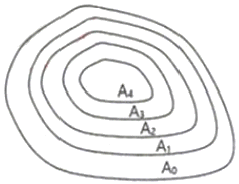
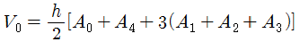
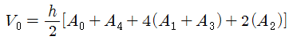
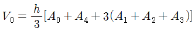
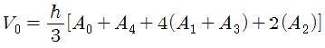
(정답률: 52%)
23. 터널완성 후의 변형조사측량 중 고저측량에 대한 설명으로 틀린 것은?
- 철도의 경우는 시공기면을 기준으로 한다.
- 수로 터널과 같이 인버트(invert)가 있는 경우는 인버트의 최상단을 기준으로 한다.
- 도로 터널에서는 arch crown을 기준으로 한다.
- 일반적으로 중심점의 높이는 중심선측량과 같이 20m 간격으로 관측한다.
(정답률: 50%)
24. 심프슨법칙에 대한 설명으로 틀린 것은?
- 심프슨법칙을 이용하는 경우, 지거 간격은 균등하게 하여야 한다.
- 심프슨의 제1법칙을 1/3법칙이라고도 한다.
- 심프슨의 제2법칙을 3/8법칙이라고도 한다.
- 심프슨의 제2법칙은 사다리꼴 2개를 1조로 하여 3차 포물선으로 생각하여 면적을 구한다.
(정답률: 62%)
25. 설계도나 시방서에 따라 시공에 필요한 점의 위치나 경사를 현지에 측설하는 측량은?
- 공사측량
- 계획조사측량
- 실시설계측량
- 준공측량
(정답률: 50%)
26. 달, 태양 등의 기조력과 기압, 바람 등에 의해서 일어나는 해수면의 주기적 승강현상을 연속 관측하는 것은?
- 조석관측
- 조류관측
- 대기관측
- 해양관측
(정답률: 68%)
27. 해양지질학적 기초자료를 획득하기 위하여 음파 또는 탄성파 탐사장비를 이용하여 음향상 및 지층 분포를 조사하는 작업을 무엇이라고 하는가?
- 해저지층탐사
- 해상중력관측
- 해저지형측량
- 해상지자기관측
(정답률: 60%)
28. 터널의 천장에 두 점의 측점을 관측하여 기계고(IH)가 –1.45m, 시준고(h)가 –1.60m, 경사거리(S)가 42.50m, 연직각(상향)이 15°30‘이었다면 두 점의 고저차는?
- 8.31m
- 11.21m
- 11.51m
- 14.41m
(정답률: 38%)
29. 하천측량의 일반적인 작업순서로 옳은 것은?
- 도상조사→현지조사→평면측량→수준측량→유량측량
- 도상조사→현지조사→유량측량→수준측량→평면측량
- 현지조사→도상조사→유량측량→평면측량→수준측량
- 현지조사→유량측량→도상조사→수준측량→평면측량
(정답률: 62%)
30. 그림과 같은 노선 단면에서 여유폭을 포함하는 용지의 폭은? (단, 여유폭 = 0.5m로 한다.)
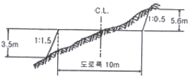
- 18.⑤m
- 19.⑤m
- 23.53m
- 24.53m
(정답률: 38%)
31. 완화곡선에 대한 설명으로 옳지 않은 것은?
- 완화곡선의 곡선반지름은 시점에서 무한대, 종점에서 원곡선의 반지름으로 된다.
- 완화곡선의 접선은 시점에서 원호에, 종점에서 직선에 접한다.
- 클로소이드의 형식에는 S형, 복합형, 기본형 등이 있다.
- 모든 클로소이드는 닮은꼴이며 클로소이드의 요소에는 길이의 단위가 있는 것과 단위가 없는 것이 있다.
(정답률: 52%)
32. 하천측량에서 수위관측소를 설치할 경우 고려사항으로 틀린 것은?
- 관측소의 위치는 그 상ㆍ하류의 상당한 범위까지 하안과 하상이 안전하고 세굴이나 퇴적이 되지 않아야 한다.
- 상ㆍ하류의 길이 약 100m 정도의 구간은 직선이고 유속의 변화가 작은 곳이 좋다.
- 지천의 합류점 또는 분류점으로 수위의 변화가 뚜렷한 곳이어야 한다.
- 평상시에는 홍수 때보다 수위표를 쉽게 읽을 수 있는 곳이어야 한다.
(정답률: 71%)
33. 하천측량의 수위관측에서 양수표에 대한 설명으로 옳지 않은 것은?
- 영(0) 눈금은 최저수위보다 높다.
- 양수표의 최고수위는 최대 홍수위보다 높다.
- 검조장의 평균해면 표고로 측정한다.
- 홍수 뒤에는 부근 수준점과 연결하여 표고를 확인한다.
(정답률: 55%)
34. 면ㆍ체적 측량에 관한 설명 중 틀린 것은?
- 구적기에 의한 방법은 도면의 축적과 신축 등으로 인하여 직접법에 비해 정확도가 다소 떨어진다.
- 각주공식은 다각형인 양단면이 평행인 경우에 중앙의 면적을 구한 후 심프슨 제2법칙을 적용하여 구한다.
- 다각측량에서 폐합다각형 내의 면적은 배횡거법으로 구할 수 있다.
- 산지에서의 정지작업 또는 매립용량, 저수지담수량의 체적산정 등에는 등고선법이 사용된다.
(정답률: 40%)
35. 토털스테이션(total station)을 이용한 단곡선 설치에 있어서 가장 널리 사용되는 편리한 방법은?
- 종거에 의한 설치법
- 중앙종거법
- 지거설치법
- 좌표법
(정답률: 55%)
36. 터널 내외 연결측량에 관한 설명으로 옳지 않은 것은?
- 1개의 수직 터널에 의한 연결측량방법은 정렬법과 삼각법이 있다.
- 선단에 추를 달아 수직선을 내리고 추의 흔들림을 막기 위해 물 또는 기름통에 넣는다.
- 얕은 수직 터널에서는 보통 철선, 강선, 황동선이 이용되며 깊은 수직 터널에서는 피아노선이 이용된다.
- 수직 터널이 한 개인 경우 수직 터널에 한 개의 수선을 내리고 이 수선의 길이와 방위를 관측한다.
(정답률: 38%)
37. 직선과 반지름(R)이 500m인 원곡선 사이에 3차 포물선에 의한 150m 길이의 완화곡선을 설치할 경우에 완화곡선 시점 A(B.T.C)로부터 주접선상 100m인 지점에서 완화곡선 위의 C점까지 수직거리 y는?
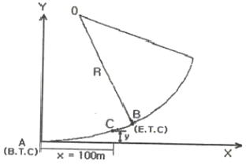
- 0.22m
- 1.75m
- 2.22m
- 2.75m
(정답률: 36%)
38. 반지름이 100m, 교각이 55°20’일 때 접선길이(T.L)는?
- 40.34m
- 52.43m
- 60.34m
- 72.43m
(정답률: 54%)
39. 측량결과에 의하여 그림과 같이 절토고를 얻었다면 절토량은? (단, 각 분할된 구역은 가로×세로=20m×10m로 동일하다.)
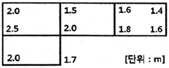
- 1375m3
- 1425m3
- 1475m3
- 1525m3
(정답률: 41%)
40. 하천의 유속측정에서 수면으로부터 수심(H)이 0.2H, 0.6H, 0.8H인 지점에서 관측한 유속이 0.541m/s, 0.417m/s, 0.355m/s일 때 2점법으로 구한 평균유속은?
- 0.479m/s
- 0.448m/s
- 0.433m/s
- 0.386m/s
(정답률: 57%)
3과목: 사진측량 및 원격탐사
41. SAR(Synthetic Aperture Radar)에 대한 설명으로 틀린 것은?
- 야간에도 데이터 획득이 가능하다.
- 측면방향으로 데이터를 획득할 수 있다.
- DEM 생성이 가능하다.
- 수동적 광학센서를 사용한다.
(정답률: 69%)
42. 항공사진 또는 위성영상을 지상기준점(GCP)을 이용해 왜곡된 영상의 좌표와 실제 지표 좌표를 연계하여 영상의 좌표를 지도 좌표계와 일치 시키는 과정을 무엇이라 하는가?
- 대기보정(Atmospheric Correction)
- 방사량보정(Radiometric Correction)
- 시스템보정(System Correction)
- 기하보정(Geometric Correction)
(정답률: 69%)
43. 항공사진의 특수 3점이 아닌 것은?
- 지표점
- 연직점
- 등각점
- 주점
(정답률: 61%)
44. 절대표정이 완전히 끝났을 때 사진모델과 실제지형의 관계로 옳은 것은?
- 합동
- 상사
- 상반
- 일치
(정답률: 58%)
45. 상호표정의 불완전 모형(incomplete model)을 설명한 것으로 가장 적합한 것은?
- 입체모형에서 회전인자를 사용할 수 없는 모형
- 입체모형에서 공면조건이 없는 모형
- 입체모형에서 일부가 구름 등으로 가려져 상호표정에 필요한 6점을 이상적으로 배치할 수 없는 모형
- 입체모형에서 평행변위부 수정을 위하여 기계적 방법을 사용하여야 하는 모형
(정답률: 40%)
46. 상호표정과 관련이 없는 것은?
- 종시차 제거
- 모델좌표계
- 지상기준점
- 공액점
(정답률: 33%)
47. 사진의 크기와 촬영고도가 같을 경우에 초광각 카메라에 의한 촬영지역의 면적은 광각 카메라로 찍은 경우의 약 몇 배가 되는가?
- 2배
- 3배
- 6배
- 9배
(정답률: 47%)
48. 항공라이다(LiDAR)의 특성으로 틀린 것은?
- 능동센서이므로 야간에도 측량이 가능하다.
- 레이저펄스가 반사된 지점의 3차원 좌표 및 반사강도를 제공한다.
- 산림지역의 순수한 지표면의 DEM 생성이 가능하다.
- 지하매설물에 대한 탐지가 가능하다.
(정답률: 71%)
49. 사진측량용 카메라와 일반카메라를 비교하였을 때 사진측량용 카메라에 대한 설명으로 옳지 않은 것은?
- 해상력과 선명도가 높다.
- 거대하고 중량이 크다.
- 렌즈의 지름이 크다.
- 셔터 속도가 느리다.
(정답률: 70%)
50. 축척 1:50000 지형도에서 종방향×횡방향=18cm×36cm의 도화구역이 있다. 이것을 활영축척 1:20000, 종중복도 60%, 횡중복도 30%, 사진의 크기 23cm×23cm로 촬영할 경우에 사진 수는? (단, 촬영코스수를 계싼하는 정밀계산에 의한다.)
- 36장
- 33장
- 30장
- 27장
(정답률: 33%)
51. 위성영상의 지상수신소에서 사용자에게 공급하는 위성영상자료의 포맷이 아닌 것은?
- SIF(Standard Interchange Format)
- BIL(Band Interleaved by Line)
- BSQ(Band SeQuential)
- HDF(Hierarchical Data Format)
(정답률: 43%)
52. 공선조건식에 포함되지 않는 것은?
- 초점거리
- 주점의 위치
- 촬영점의 좌표
- 사진지표의 좌표
(정답률: 44%)
53. 센서의 순간시야각(IFOV)이 1.5mrad(milli radians)이고, 촬영 고도가 1000m일 때 지상 공간해상도로 옳은 것은?
- 0.15m×0.15m
- 1.5m×1.5m
- 15m×15m
- 150m×150m
(정답률: 44%)
54. 수치도화기(디지털 도화기)에 가장 적합한 입체시 방법은?
- 편광입체시
- 순동입체시
- 여색입체시
- 컬러입체시
(정답률: 55%)
55. 촬영고도 1500m에서 평탄지를 촬영한 두 연직사진 상에서 2점간의 시차차를 측정하니 4mm이었다면 이 2점간의 비고차는? (단, 카메라의 초점거리 153mm, 종중복도 60%, 사진의 크기 23cm×23cm)
- 19.6m
- 32.6m
- 39.2m
- 65.2m
(정답률: 25%)
56. 사진측량의 특징에 대한 설명으로 틀린 것은?
- 정량적 및 정성적 측량이 가능하다.
- 동적인 대상물의 측량이 가능하다.
- 작업의 자동화로 과정이 단순하고 현장에서 오류를 발견하기 쉽다.
- 해상도만 만족하면 축척변경이 용이하다.
(정답률: 47%)
57. 아래와 같은 영상을 분석하기 위해 산림지역의 트레이닝 필드를 선정하였다. 트레이닝 필드로부터 산출되는 각 밴드의 평균값은?
- 밴드 ‘1’=5.2, 밴드 ‘2’=3.3
- 밴드 ‘1’=3.3, 밴드 ‘2’=5.2
- 밴드 ‘1’=1.6, 밴드 ‘2’=1.2
- 밴드 ‘1’=1.2, 밴드 ‘2’=1.6
(정답률: 51%)
58. 항공사진측량에서 스트립(Strip)에 관한 설명으로 틀린 것은?
- 촬영진행 방향으로 연속된 모델이다.
- 비행경로와도 유사한 의미로 쓰인다.
- 한 쌍의 중복된 사진을 의미한다.
- 스트립이 횡방향으로 결합된 것을 브록(block)이라 한다.
(정답률: 54%)
59. 표고 300m의 평탄한 지역을 사진축척 1:10000으로 촬영한 연직사진의 촬영고도는? (단, 카메라의 초점거리는 15.0cm이다.)
- 1500m
- 1800m
- 2000m
- 2500m
(정답률: 51%)
60. 원격탐사 플랫폼에서 지상물체의 특성을 탐지하고 기록하기 위해 이용하는 전자기복사 에너지가 파장이 긴 것부터 짧은 것의 순서로 옳게 나열된 것은?
- Visible Blue-Visible Red-Visible Green
- Visible Red-Visible Green-Visible Blue
- Visible Blue-Mid Infrared-Thermal Infrared
- Visible Red-Mid Infrared-Thermal Infrared
(정답률: 69%)
4과목: 지리정보시스템
61. 절대적인 정확성과 정밀성을 지닌 공간 데이터는 존재하지 않으며 항상 오차를 포함하고 있다. 공간 데이터의 오차 발생 및 그 유형에 대한 설명으로 옳지 않은 것은?
- 일반적으로 공간 데이터에 나타나는 오차는 크게 원시자료, 데이터 수치화와 지도 편집 과정, 데이터 처리과정과 분석 단계에서 발생한다.
- 오차 발생 유형의 특성을 토대로 분류되는 오차로는 원래부터 잠재적으로 지니고 있는 내재적 오차(inherent Errors)와 구축과정에서 발생하는 작동적 오차(operational errors)로 범주화 할 수 있다.
- 공간 데이터의 수집 단계에서 발생하는 오차는 일반적으로 그 다음 단계로 옮겨지면 누적되지 않는다.
- 서로 다른 출처, 포맷, 축척, 정확도 수준의 수치 데이터들이 하나의 시스템 환경에 통합되어 작동되기 때문에 상당한 오차가 내재되어 있음에도 불구하고 특별한 경우가 아니면 사용자들은 오차로 인한 문제점을 거의 알지 못하게 된다.
(정답률: 55%)
62. OGC Wed Service(OWS) 중 WPS(Web Processing Service)에서 지원하는 연산(Operation)이 아닌 것은?
- GetCapabilities
- DescribeProcess
- GetCoverage
- Execute
(정답률: 32%)
63. 지리정보시스템(GIS)의 주요 기능과 거리가 먼 것은?
- 자료 처리
- 자료 출력
- 자료 복원
- 자료 관리
(정답률: 67%)
64. 레스터데이터(격자자료) 구조에 대한 설명으로 옳지 않은 것은?
- 셀의 크기에 관계없이 컴퓨터에 저장되는 자료의 양은 일정하다.
- 셀의 크기는 해상도에 영향을 미친다.
- 셀의 크기에 의해 지리정보의 위치정확성이 결정된다.
- 연속면에서 위치의 변화에 따라 속성들의 점진적인 현상 변화를 효과적으로 표현할 수 있다.
(정답률: 64%)
65. 아래 두 테이블을 합집합(union)한 결과로 옳은 것은?
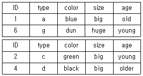
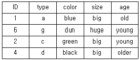
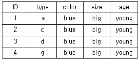
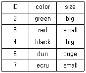
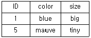
(정답률: 64%)
66. 다음 중 영상자료의 일반적인 저장방식이 아닌 것은?
- BIL(Band Interleaved by Line)
- BSQ(Band Sequential)
- BIP(Band Interleaved by Pixel)
- BIT(Band Interleaved by Time)
(정답률: 49%)
67. 우리나라 국토교통부에서 2012년부터 OpenAPI 방식으로 3차원 공간정보를 서비스하고 있는 시스템은?
- 케이오픈맵
- 브이월드
- 구글맵
- 오픈스트리트맵
(정답률: 65%)
68. 수치지도 제작에 사용되는 용어에 대한 설명으로 틀린 것은?
- 좌표는 좌표계 상에서 지형ㆍ지물의 위치를 수학적으로 나타낸 값을 말한다.
- 도곽은 일정한 크기에 따라 분할된 지도의 가장자리에 그려진 경계선을 말한다.
- 메타데이터(metadata)는 작성된 수치지도의 결과가 목적에 부합하는지 여부를 판단하는 기준 데이터를 말한다.
- 수치지도작성은 각종지형공간정보를 취득하여 전산시스템에서 처리 할 수 있는 형태로 제작 또는 변환하는 일련의 과정이다.
(정답률: 59%)
69. 유비쿼터스(ubiquitous)의 정의로 가장 적합한 것은?
- 시간과 장소에 구애받지 않고 언제 어디서나 원하는 정보에 접근할 수 있는 기술이나 환경
- 인공지능 컴퓨터와 로봇에 의하여 사람의 노동력이 최소화 될 수 있는 기술이나 환경
- 사람들이 편안하고 행복하게 살 수 있는 복지사회 구현을 위한 이상적 기술이나 환경
- GNSS와 GIS를 결합하여 4차원 정보관리를 할 수 있는 기술이나 환경
(정답률: 61%)
70. 공간정보를 효과적으로 표현하기 위한 방법으로 복잡한 공간정보를 약속된 형태로 단순화하여 표현하는 방법은?
- 심볼화
- 체계화
- 수치화
- 최소화
(정답률: 60%)
71. 공간데이터베이스 내에 저장되는 객체가 갖는 정보로서 객체간 공간상의 위치나 관계성을 좀 더 정량적으로 구현하기 위한 것은?
- 도형정보
- 속성정보
- 메타정보
- 위상정보
(정답률: 50%)
72. 단순한 tree 구조를 가지고 있으며 데이터의 갱신은 쉽지만 검색과정이 폐쇄적인 데이터베이스는?
- 객체지향형 데이터베이스
- 네트워크형 데이터베이스
- 계층형 데이터베이스
- 관계형 데이터베이스
(정답률: 64%)
73. 토지의 이용, 개발, 행정, 다목적 지적 등 토지자원에 관련된 문제 해결을 위한 정보분석체계는?
- 환경정보체계(EIS)
- 토지정보체계(LIS)
- 위성측위체계(GNSS)
- 시설물정보체계(FMS)
(정답률: 69%)
74. 래스터 기반의 지리자료에 관한 설명으로 틀린 것은?
- 범주형 자료(categorical data)는 연산이 불가능하므로 비율자료(ratoi data)로 변환해야 한다.
- 셀의 크기와 공간 범위(spatial extent)가 같아야 중첩 연산이 가능하다.
- 범주형 자료이지만 셀 값은 수치로 표현한다.
- DEM은 래스터 기반의 지형표고모델이다.
(정답률: 40%)
75. 다음은 지리정보시스템(GIS)의 구성요소 중 무엇에 대한 설명인가?
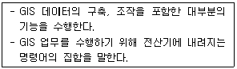
- 소프트웨어
- 하드웨어
- 네트워크
- 자료
(정답률: 65%)
76. 그림은 10m 해상도의 수치표고모형(DEM)의 격자를 나타낸다. 선형보간법에 의한 P점의 높이는? (단, 격자크기는 10m×10m이다.)
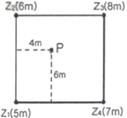
- 6.0m
- 6.2m
- 6.4m
- 6.6m
(정답률: 35%)
77. 실세계의 지리공간을 GIS의 데이터베이스로 구축하는 과정을 추상화 수준에 따라 개념적 모델, 논리적 모델, 물리적 모델의 세 단계로 분류할 때, 논리적 모델에 대한 설명으로 옳은 것은?
- 컴퓨터에서의 실행 여부나 데이터베이스와 관련 없이 독립적이다.
- 데이터베이스의 실행을 염두에 두고 데이터가 보다 공식화된 언어로 기록된다.
- 추상화 단계가 가장 낮은 모델이며, 인간의 인지적 관점에서 실세계를 보는 것이다.
- 컴퓨터에서 실제로 운영되는 형태의 모델로 데이터의 물리적 저장을 의미한다.
(정답률: 38%)
78. 격자(Raster)구조에서 벡터(Vector)구조로 변환하는 벡터화에 대한 일밙거인 과정을 순서대로 나열한 것은?
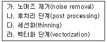
- 가-나-다-라
- 가-다-라-나
- 라-가-나-다
- 라-다-나-가
(정답률: 54%)
79. 관계형 데이터 모델에서 하나의 속성이 취할 수 있는 같은 유형의 모든 원자값의 집합을 의미하는 용어는?
- 튜플(tuple)
- 속성(attribute)
- 릴레이션(relation)
- 도메인(domain)
(정답률: 44%)
80. 디지타이징을 통해 도형을 입력하는 과정에서 작업자의 실수에 의해 발생하는 오차가 아닌 것은?
- Spike
- Overshooting
- Undershooting
- Pseudo items
(정답률: 55%)
5과목: 측량학
81. 그림과 같이 교호수준측량을 실시하였을 때 B점의 표고는? (단, a1=0.64m, a2=2.87m, b1=0.07m, b2=2.42m)
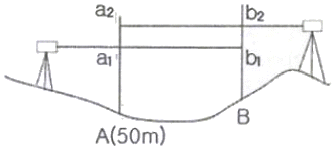
- 49.49m
- 50.51m
- 50.85m
- 52.29m
(정답률: 50%)
82. 어느 각을 8회 관측하여 평균제곱근오차 ±0.7“를 얻었따. 같은 조건으로 관측하여 ±0.3”이하의 평균제곱근오차를 얻기 위해서는 최소 몇 회 이상 측정하여야 하는가?
- 18회
- 24회
- 32회
- 44회
(정답률: 32%)
83. 수준측량에서 전시와 후시의 거리를 같게 하는 것이 좋은 가장 큰 이유는?
- 레벨의 시준선 오차 소거
- 망원경의 시야 변경
- 표척의 눈금오차 소거
- 표척의 기울기 오차 소거
(정답률: 48%)
84. 동일한 정밀도로 각을 관측하여 a=39°19’40“, β=52°25’29”, γ=91°45’00“를 얻었다면 γ의 최확값은?
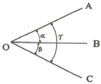
- 91° 44‘57”
- 91° 44’59“
- 91° 45‘01”
- 91° 45’03“
(정답률: 39%)
85. 오차와 관련된 설명으로 틀린 것은?
- 표준편차는 착오와 정오차를 보정하기 위한 값이다.
- 정오차는 누적오차라고도 하며 원인이 분명하여 보정이 가능하다.
- 우연오차는 오차가 일정하게 누적되지 않는 오차이다.
- 줄자의 장력 차이에 따른 오차는 정오차에 해당한다.
(정답률: 43%)
86. 트래버스측량의 각 관측에서 오차가 생겼을 때, 허용범위 안에 있을 경우의 오차배분에 대한 설명으로 옳지 않은 것은?
- 각 관측의 정확도가 같을 때는 오차를 각의 대소에 관계없이 등분하여 배분한다.
- 각 관측의 경중률이 다를 경우에는 그 오차를 경중률을 고려하여 배분한다.
- 각 관측의 경중률이 같을 경우에는 각의 크기에 비례하여 배분한다.
- 변길이의 역수에 비례하여 각 관측각에 배분한다.
(정답률: 47%)
87. 수평각관측 방법에 대한 설명으로 옳지 않은 것은?
- 단각법은 하나의 각을 1번 관측하는 것으로 시준오차와 읽기오차가 발생된다.
- 배각법은 방향각법에 비해 읽기오차가 크다.
- 조합각 관측법(각관측법)은 수평각 관측법 중 가장 정확한 값을 얻을 수 있다.
- 방향각법은 한 측점 주위의 각이 많을 경우 이용하는 방법이다.
(정답률: 47%)
88. 그림과 같이 다각측량을 수행할 경우 측선
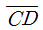
의 역방위각은? (단,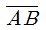
측선의 방위각(αAB)은 70°이다.)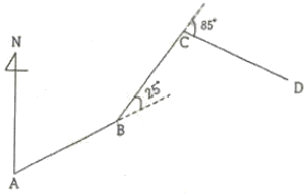
- 45°
- 130°
- 180°
- 310°
(정답률: 47%)
89. 등고선의 성질에 대한 설명으로 옳지 않은 것은?
- 등고선은 도면 내외에서 폐합하는 곡선이다.
- 등고선은 최대경사방향과 직각으로 교차한다.
- 등고선은 경사가 급한 곳에서는 간격이 좁고, 완만한 경사에서는 넓다.
- 높이가 다른 두 등고선은 어떠한 경우에도 서로 교차하지 않는다.
(정답률: 58%)
90. 축척 1:500 지형도를 이용하여 축척 1:2500의 지형도를 제작하고자 한다. 1:2500지형도 1도엽은 1:500 지형도를 몇 매 포함한 것인가?
- 25매
- 36매
- 40매
- 45매
(정답률: 54%)
91. ABCD구역에 대해 각 변의 거리를 관측하여 그림과 같은 결과를 얻었다면 면적은? (단, 거리의 단위는 m이다.)
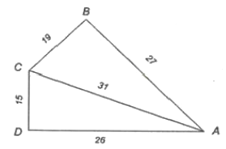
- 648.88m2
- 548.88m2
- 448.88m2
- 348.88m2
(정답률: 45%)
92. 전파거리측량기보다 광파거리측량기가 많이 이용되는 이유로 틀린 것은?
- 비교적 정확도가 높다.
- 1인 측량이 가능하다.
- 기상조건의 영향을 받지 않는다.
- 조작이 간편하여 신속하게 측정할 수 있다.
(정답률: 52%)
93. 삼각점 A에 기계를 설치하여 삼각점 B를 시준하여 각 T를 관측하고자 하였으나 장애물로 인해 B로부터 e만큼 떨어진 위치의 점 P를 관측하여 T’=60°30’를 얻었다면 각 T는? (단, S=2km, e=5m, ø=310°20’)
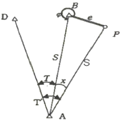
- 60° 16’33“
- 60° 23’27“
- 60° 29’27“
- 60° 36’33“
(정답률: 29%)
94. A점의 표고가 135m, B점의 표고가 113m일 때, 두 점 사이에 130m 등고선을 삽입한다면 이 등고선과 B점 사이의 수평거리는? (단, AB의 수평거리는 250m이고, 등경사 구간이다.)
- 150.4m
- 170.5m
- 193.2m
- 203.9m
(정답률: 38%)
95. 측량업 등록을 취소하여야 하는 경우가 아닌 것은?
- 다른 사람에게 자기의 성명 또는 상호를 사용하여 측량업무를 하게 한 경우
- 측량업의 등록을 한 날부터 3개월 이내에 영업을 시작하지 아니한 경우
- 영업정지기간 중에 계속하여 영업을 한 경우
- 거짓이나 그 밖의 부정한 방법으로 측량업의 등록을 한 경우
(정답률: 68%)
96. 기본측량성과를 국외로 반출할 수 없는 경우는?
- 축척 5백분의 1 이상의 대축척의 지도를 반출 하는 경우
- 관광객 유치를 목적으로 측량용 사진을 제작하여 반출하는 경우
- 정부를 대표하여 국제회의 또는 국제기구에 참석자가 자료로 사용하기 위하여 측량용 사진을 반출하는 경우
- 대한민국 정부와 외국 정부 간에 체결된 협정 또는 합의에 따라 기본측량성과를 상호 교환하는 경우
(정답률: 72%)
97. 공공측량시행자가 지형ㆍ지물의 변동사항을 통보하여야 하는 건설공사의 종류 및 규모 기준으로 틀린 것은? (단, 각 건설공사의 종류는 각각의 관련법규에 따른 규정을 충족하는 사업이다.)
- 도시개발사업 중 면적이 5만제곱미터 이상인 것
- 산업단지개발 사업 중 면적이 5만제곱미터 이상인 것
- 길이 1킬로미터 이상의 도로건설사업
- 하천공사 중 그 공사구간이 하천중심길이로 5킬로미터 이상인 것
(정답률: 40%)
98. 공공측량시행자는 공공측량을 하기 며칠 전에 공공측량 작업계획서를 제출하여야 하는가?
- 3일
- 7일
- 15일
- 30일
(정답률: 56%)
99. 정당한 사유 없이 측량의 실시를 방해한 자에 대한 처분 기준으로 옳은 것은?
- 3년 이하의 징역 또는 3천만원 이하의 벌금
- 2년 이하의 징역 또는 2천만원 이하의 벌금
- 1년 이하의 징역 또는 1천만원 이하의 벌금
- 300만원 이하의 과태료
(정답률: 44%)
100. 국토교통부장관은 측량기본계획을 몇 년마다 수립하여야 하는가?
- 1년
- 3년
- 5년
- 10년
(정답률: 66%)